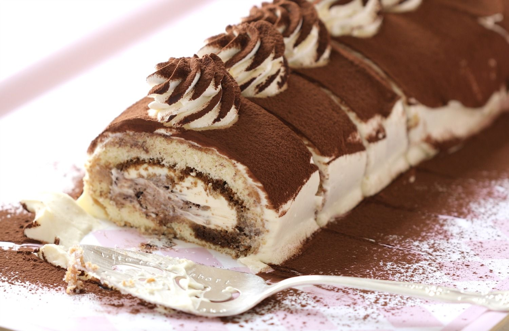
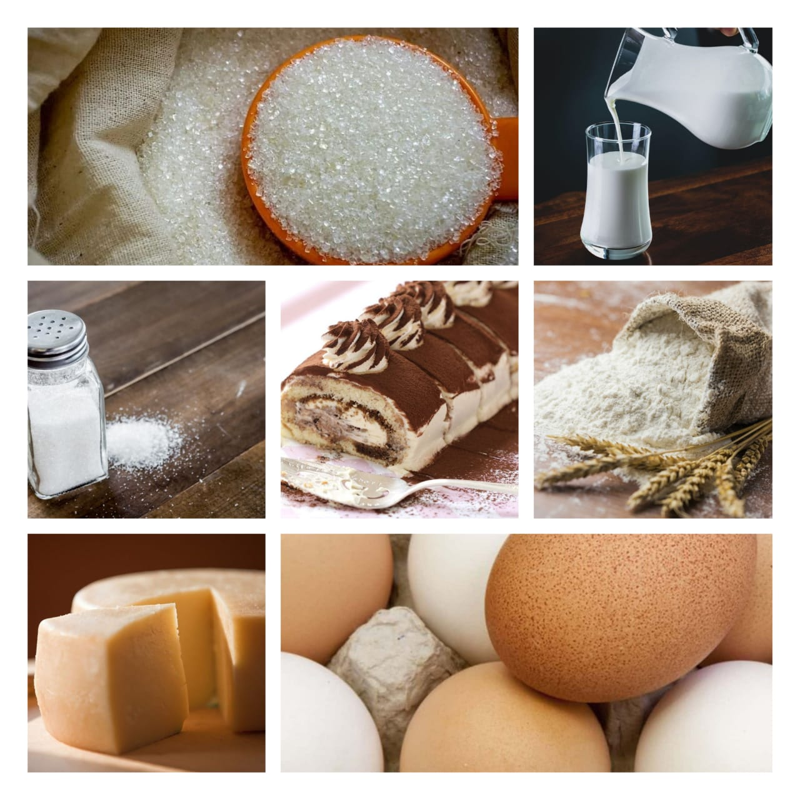

creep roll
Home
The delicate flavor of layers of mascarpone and Italian custard are contrasted with the darkly robust presence of espresso and sharpness of cocoa powder. The name itself, tiramisu, means “pick me up” in Italian most likely referring to the two caffeinated ingredients that are present in the dish, espresso and cocoa. That's perfect for this recipe, because it's just about the easiest way to add some cheer to your morning routine.

Turn your everyday pancakes into something delicious and mouthwatering, and finish with a big ol' scoop of mascarpone cream. Make your next brunch unforgettable, and let Redpath sweeten it.
Ingredients
600 ml milk
4 eggs
240 g all-purpose flour
2 tbsp cocoa powder
1 tbsp sugar
Pinch of salt
butter
250 g mascarpone cheese
200 ml whipping cream
180 g sugar
30 ml Marsala wine
1 tsp gelatine powder
1 tbsp instant coffee

Nutrition Facts
calories 280
Total Fat 11g
Cholestero 45mg
Sodium 210mg
Total Carbohydrate 41g
Vitamin C 0%
vitamin A 14%
Procedure
Preheat oven to 350℉ (175℃). Lightly grease and line a 13 x 18 inch (33 x 46 centimetres) rimmed baking sheet with parchment paper. Lightly grease the parchment paper.
In a large bowl, whisk together flour, the Redpath® Granulated Sugar, baking powder, salt, and baking soda until thoroughly combined.
In a large measuring cup or bowl, whisk together the milk, yogurt, eggs, egg white, slightly cooled melted butter, and pure vanilla extract until blended.
Pour the wet ingredients into the dry. Whisk until just combined.
Pour and evenly spread the pancake batter into the lined baking sheet. Place into the preheated oven and bake for 22 to 25 minutes or until the pancake is golden in colour and a skewer inserted into the centre comes out clean.
Dust a clean tea towel with the Redpath® Icing Sugar. Carefully flip the cake onto the tea towel, remove pan. Gently remove parchment and roll pancake, from one of the shorter ends, into the towel. Place the roll, seam side down, onto a wire rack and allow to cool completely.
In the chilled bowl of a stand mixer using the whisk attachment, whip heavy cream until medium peaks form. Transfer the whipped cream into a separate bowl and set aside in the fridge until needed.
In the same bowl, whip the mascarpone cream until smooth; about 1 minute. Sift in the Redpath® Icing Sugar. Starting on low speed, slowly incorporate the icing sugar into the cheese. Add in the dark rum (or marsala wine, if using) Increase speed to medium-high until the mascarpone thickens.
Fold in the whipped whip cream.Place into the fridge to chill.In a small bowl combine the hot water with the Redpath® Granulated Sugar. Stir to dissolve. Stir in the instant espresso or coffee, dark rum (or marsala wine, if using), and vanilla extract.
Gently unroll cooled pancake, keeping it on the tea towel With a pastry brush, brush the espresso simple syrup over the entire surface of the pancake.
Evenly spread the mascarpone cream over the pancake, leaving 1 inch (2.5 centimetres) or so free from cream at the far end. Sift cocoa powder over the mascarpone cream and sprinkle with chocolate shavings (optional).
Carefully roll the pancake back up (towards the end that is free of tiramisu cream). Place the tiramisu pancake roll, seam side down, onto a large piece of plastic wrap. Wrap with plastic wrap and place into the fridge to allow the flavours to meld; at least 2 hours. Carefully unwrap the tiramisu pancake roll and dust with cocoa powder.
Expert Guide
Back ←
Scroll to Top ↑